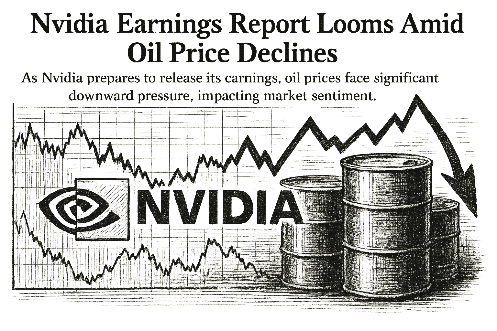

SPY
Current: $766.29Change: -2.76 (-0.36%)
Updated:
Source: yahoo_chartFreshness: fresh


As Nvidia prepares to release its earnings, oil prices face significant downward pressure, impacting market sentiment.

Today's Headline: Nvidia Earnings Report Looms Amid Oil Price Declines
Setup: As Nvidia prepares to release its earnings, oil prices face significant downward pressure, impacting market sentiment.
Primary Topic: Nvidia Earnings
Specific Development: Nvidia's earnings report is set for today, with expectations high for growth amid a challenging market environment.
Why Today Is Different: The outcome of Nvidia's earnings could significantly influence tech stocks and overall market sentiment, especially given the current volatility in oil prices.
Secondary Topics: Oil Prices; Market Sentiment
Tone: cautious
Sectors: Technology; Energy
Companies: Nvidia; Amazon
Commodities: Oil
Countries Or Regions: United States
Macro Themes: Earnings Season; Geopolitical Tensions
Why This Story: Nvidia's performance is critical for tech investors, and its results may set the tone for the sector amid fluctuating oil prices.
Why This Matters: Treasury Bond Buybacks Cannot Solve A Fiscal Problem; Nvidia Earnings And Inflation Data Expected Tomorrow is the clearest current evidence-led frame for Joshua's observation-only review; missing facts remain explicit intelligence gaps.

Summary: Global markets are reacting to Nvidia's upcoming earnings report and declining oil prices.
What Happened Overnight: Oil prices fell sharply, with Brent down over 8%, while tech stocks await Nvidia's earnings.
What Changed Materially: The significant drop in oil prices could shift investor sentiment ahead of Nvidia's report.
Which Assets Sectors Are Affected: Energy; Technology
Does It Look Like Noise Or A Real Regime Input: The drop in oil prices appears significant and could influence market dynamics.
Why This Matters: Joshua can use verified cross-asset moves and deterministic risk context while keeping causation explicitly unresolved.

NVDA Earnings — 2026-08-26, After Close
Consensus EPS: $2.13
Year-ago EPS: unavailable
Expected EPS growth: unavailable
Consensus revenue: $93.6B
Year-ago revenue: unavailable
Expected revenue growth: unavailable
Source: finnhub_earnings_calendar · As of: 2026-08-26T14:14:13.459261+00:00 · Freshness: current

- WOPR learning pipeline: Collecting samples
- Candidates evaluated 24h: 0
- Current gate: Evidence
- Notification ledger events in 24h: 11
- Pending orders created/canceled/filled/expired: 2/0/0/0
- Pending lifecycle interpretation: Pending-order cancellations have trackable reasons and no obvious rapid churn pattern.
- Portfolio risk: Label: Moderate / Score: 41.4
- Latest intelligence gap report: intelligence_gap_report_2026-08-23.pdf
Why This Matters: The active gate is Evidence, so the key question is why candidates are stopping before approval, not how to force trades.

- Sentinel role: infrastructure and operational status only.
- State: ONLINE
- Last successful validation: 2026-08-26T14:13:57.463679+00:00
- Payloads accepted/rejected: 14420/0
- Node health score: 100
Why This Matters: Sentinel is ONLINE, so Joshua should use its context only to the extent the latest accepted pulse is fresh and authenticated.

CANDIDATES MOVING THROUGH JOSHUA'S INVESTMENT-REVIEW WORKFLOW
FROZEN DAILY BRIEF SNAPSHOT | 2026-08-26T14:15:26.165734+00:00
QUEUE SUMMARY | Investment Ready: 0 | Waiting for Price: 0 | Waiting for Evidence: 4 | Research Underway: 1 | Governance Hold: 1 | Monitor Only: 0
Investment-ready status: No candidates are currently Investment Ready.
#3 NVDA - Waiting for Evidence [Moved Up 4->3]
Joshua's Thesis: Positive thesis not yet established.
Why Waiting: Evidence quality is insufficient.
Price: 211.57 now; 209.47 preferred entry
What Unlocks It: Clear valuation support; Evidence that the business quality matches the risk being taken; Independent evidence streams pointing the same way
Portfolio Fit: 18.4/100 — VERY LOW ↑
Candidate Risk: 73.6/100 — HIGH ↓
Next: Data confidence must reach at least 34/100. Owner: Joshua.
#8 QBTS - Waiting for Evidence [Moved Down 3->8]
Joshua's Thesis: Positive thesis not yet established.
Why Waiting: Waiting for the preferred entry price.
Price: 18.15 now; 20.10 preferred entry
What Unlocks It: Clear valuation support; Evidence that the business quality matches the risk being taken; Independent evidence streams pointing the same way
Portfolio Fit: 0.0/100 — VERY LOW
Candidate Risk: 100.0/100 — VERY HIGH ↑
Next: Fill before expires_at while entry conditions remain valid. Owner: Joshua.
#12 PLTR - Governance Hold [Moved Up 15->12]
Joshua's Thesis: Positive thesis not yet established.
Why Waiting: Governance gate has not cleared.
Price: 174.69 now; 126.93 preferred entry
What Unlocks It: Governance gate clears; Clear valuation support; Evidence that the business quality matches the risk being taken
Portfolio Fit: 18.4/100 — VERY LOW ↑
Candidate Risk: 73.6/100 — HIGH ↓
Next: Re-evaluate after the recorded gate clears. Owner: Columbo.
#21 IONQ - Waiting for Evidence
Joshua's Thesis: Positive thesis not yet established.
Why Waiting: Waiting for the preferred entry price.
Price: 41.15 now; 42.23 preferred entry
What Unlocks It: Clear valuation support; Evidence that the business quality matches the risk being taken; Independent evidence streams pointing the same way
Portfolio Fit: 0.0/100 — VERY LOW
Candidate Risk: 100.0/100 — VERY HIGH ↑
Next: Data confidence must reach at least 58/100. Owner: Joshua.
#22 UUUU - Waiting for Evidence [Moved Down 20->22]
Joshua's Thesis: Positive thesis not yet established.
Why Waiting: Waiting for the preferred entry price.
Price: 15.93 now; 13.88 preferred entry
What Unlocks It: Clear valuation support; Evidence that the business quality matches the risk being taken; Independent evidence streams pointing the same way
Portfolio Fit: 0.0/100 — VERY LOW
Candidate Risk: 100.0/100 — VERY HIGH ↑
Next: Data confidence must reach at least 58/100. Owner: Joshua.
#25 DIA - Research Underway [NEW]
Joshua's Thesis: Positive thesis not yet established.
Why Waiting: Research evidence is still being gathered.
Price: Current price unavailable.; Preferred entry not established.
What Unlocks It: Clear valuation support; Evidence that the business quality matches the risk being taken; Independent evidence streams pointing the same way
Portfolio Fit: 18.4/100 — VERY LOW
Candidate Risk: 73.6/100 — HIGH
Next: Clear valuation support; Evidence that the business quality matches the risk being taken; Independent evidence streams pointing the same way. Owner: Columbo.
Since the prior Chronicle: ANGX - Removed
Observation only. This section creates no recommendation, order, authority, or execution instruction.

- If NVDA reaches the recorded price condition <= 209.47, which recorded evidence and governance requirements would still remain?
- If QBTS reaches the recorded price condition <= 20.1, which recorded evidence and governance requirements would still remain?
- Which recorded governance requirement must clear before PLTR can advance?
- If IONQ reaches the recorded price condition <= 42.23, which recorded evidence and governance requirements would still remain?
- What NVDA EPS or revenue result would materially change the current recorded thesis?

Nvidia's earnings report is a critical event that could shape market sentiment, especially in the tech sector. The concurrent decline in oil prices adds another layer of complexity, potentially influencing investor behavior and sector performance.

Compared to: 2026-08-25
- Market weather: Elevated -> Balanced
- Top opportunity: Still DELL
- Joshua gate: Still Evidence
- 2Y Treasury.last_price: 4.17 -> 4.17 (unchanged); 2Y Treasury.last_price changed 0.00% versus the prior frozen Chronicle snapshot.
- 2Y Treasury.percent_change: -1.6509433962264217 -> -1.6509433962264217 (unchanged); 2Y Treasury.percent_change changed 0.00% versus the prior frozen Chronicle snapshot.
- 10Y Treasury.last_price: 4.64 -> 4.64 (unchanged); 10Y Treasury.last_price changed 0.00% versus the prior frozen Chronicle snapshot.
- 10Y Treasury.percent_change: -1.2765957446808616 -> -1.2765957446808616 (unchanged); 10Y Treasury.percent_change changed 0.00% versus the prior frozen Chronicle snapshot.
- 30Y Treasury.last_price: 5.17 -> 5.17 (unchanged); 30Y Treasury.last_price changed 0.00% versus the prior frozen Chronicle snapshot.
- 30Y Treasury.percent_change: -1.1472275334608124 -> -1.1472275334608124 (unchanged); 30Y Treasury.percent_change changed 0.00% versus the prior frozen Chronicle snapshot.
- SPY.last_price: 766.64 -> 766.295 (down); SPY.last_price changed 0.05% versus the prior frozen Chronicle snapshot.
- SPY.percent_change: -0.3146698567081839 -> -0.3595298156190657 (down); SPY.percent_change changed 14.26% versus the prior frozen Chronicle snapshot.
- QQQ.last_price: 711.858 -> 710.44 (down); QQQ.last_price changed 0.20% versus the prior frozen Chronicle snapshot.
- QQQ.percent_change: -0.5895989274941478 -> -0.7876214948050477 (down); QQQ.percent_change changed 33.59% versus the prior frozen Chronicle snapshot.
- IWM.last_price: 299.73 -> 299.495 (down); IWM.last_price changed 0.08% versus the prior frozen Chronicle snapshot.
- IWM.percent_change: -0.6595519024260934 -> -0.7374386848734 (down); IWM.percent_change changed 11.81% versus the prior frozen Chronicle snapshot.

The combination of Nvidia's earnings potential and the significant drop in oil prices creates a new context for market sentiment.
No specific warnings from yesterday's brief are applicable today.
Portfolio Construction Review
Current allocation: 75.0 allocated.
Largest sector: Industrials at 33.3%.
Largest theme: Economic cycle at 33.3%.
Diversification: Mixed (66.7).
Cash allocation: 92.5% unallocated.
Recommended exposure: DELL at portfolio-fit score 18.4.
Portfolio fit: DELL has strong standalone evidence, but it increases portfolio concentration.
Why This Matters: Portfolio Manager evaluates whether an opportunity improves this portfolio; it does not select the investment, vote, or authorize execution.

Today, the evidence gate matters more than the ticker list; Evidence is where Joshua's attention belongs.

| Can trigger trade | no |
| Can modify trade rules | no |
| Can add watch items | yes |
| Can add review questions | yes |
| Can adjust confidence notes | yes |
| Input policy | external_intelligence_plus_sanitized_internal_observations |
| External policy | The Editor-in-Chief synthesizes current world/market context where available and labels unknowns; provider/model provenance remains separate. |
| Internal policy | Joshua/WOPR/Sentinel facts are supplied as sanitized observation-only summaries. |
| Editorial model | gpt-4o-mini |
- Selected by a deterministic daily rotation through symbols already present in the persisted Chronicle snapshot.
- Next earnings: August 26, 2026 (after close); status: scheduled.
- Source: finnhub_earnings_calendar.
- Related event on the canonical wire: Dow Jones Futures Due With Nvidia Earnings, Tariffs, Warsh In Focus
- Nvidia Earnings Preview: AI Capex, Blackwell Ramp And 216.40 Bullish Breakout Hold The Key
- Desk: earnings; source: SeekingAlpha; linked symbols: NVDA.
- Published: 8/25/26 21:15 MST.
- High-impact watch: Advance Economic Indicators Report (International Trade, Retail, & Wholesale) - 8/27/26 05:30 MST.
- Affected assets: US equities, Treasuries, USD; source: census_release_schedule.
- NVDA earnings: August 26, 2026, after close.
- AVGO earnings: September 2, 2026, after close.
- DELL earnings: September 3, 2026, time unknown.
- Materials: 2.89% session performance; source: persisted sector ledger.
- Communication Services: 1.38% session performance; source: persisted sector ledger.
- Financials: 1.18% session performance; source: persisted sector ledger.
- 2Y TREASURY: -1.65% recorded move; price: 4.17.
- Session: regular; catalyst status: no_verified_catalyst; source: treasury_official_yield_curve.
- Nvidia Earnings; why it matters: Nvidia's performance could set the tone for tech stocks.
- State: healthy; score: 61.70/100; advance/decline ratio: 0.72.
- Above 50-day average: 65.50%; sample: 119; provider: sentinel_sampled_breadth.
- Decision outcomes evaluated: 16; currently untestable: 0.
- Warning review: unknown 3; confidence calibration: insufficient_sample.
- Current macro regime: defensive_rotation; change probability: unavailable.
- Risk dashboard: neutral (50/100); breadth: healthy; sentiment: neutral.
- Scenario board only - a current-state observation, not a forecast or execution instruction.

- Created CAN SLIM and founded Investor's Business Daily, combining fundamental growth research with price-and-volume analysis.
- Published quotation: "The whole secret to winning in the stock market is to lose the least amount possible when you're not right."
- Published framework: Seek leading companies with strong current and annual growth, novel products or conditions, institutional accumulation, and favorable price-volume action; enter from sound bases and cut losses quickly.
- Committee lens: O'Neil adds institutional accumulation, market regime, and price-volume confirmation to Joshua's evidence set while demanding explicit invalidation when a breakout fails.
- Public philosophy profile only; no participation, endorsement, or current recommendation is implied.
- Is there a need for a strategic shift in investment focus given current market conditions?
- DELL: No canonical symbol-specific material event is linked.
- Attach the missing DELL evidence before the next committee review.
- Define evidence that would confirm or retire each unresolved warning before the next review window.
- How will Nvidia's earnings impact the broader tech sector today?
- What are the implications of falling oil prices for energy stocks?
- How should Joshua adjust its portfolio in response to these developments?
- What indicators should Joshua monitor to assess ongoing market volatility?
- Evidence agenda: DELL - No canonical symbol-specific material event is linked.
- Proposed review: Geopolitical Developments; why it matters: Tensions in the Middle East are impacting oil prices and market volatility.
- Proposed review: Oil Prices; why it matters: Fluctuations in oil prices can indicate broader economic trends.
- Canonical instruments reviewed: 24; delayed 6, fresh 18.
- Leading sources: yahoo_chart (21), treasury_official_yield_curve (3).
- Snapshot recorded: 8/26/26 07:14 MST.
Nvidia Earnings Report Looms Amid Oil Price Declines
Storm meter: Elevated
#3 NVDA - Waiting for Evidence [Moved Up 4->3]
Observation mode: observation_only
Watch: Nvidia Earnings; why it matters: Nvidia's performance could set the tone for tech stocks.
Question: How will Nvidia's earnings impact the broader tech sector today?